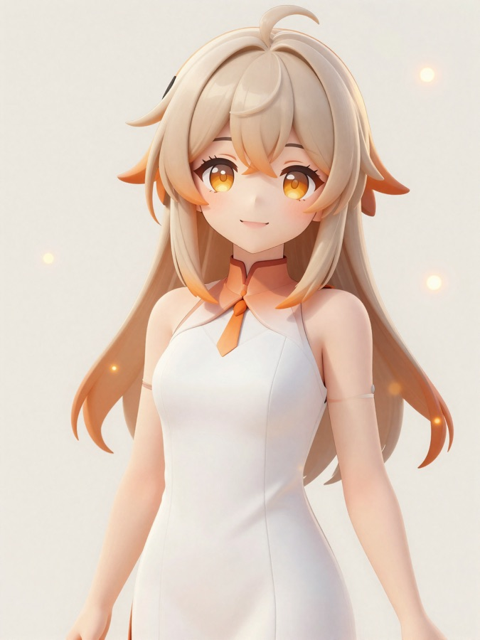
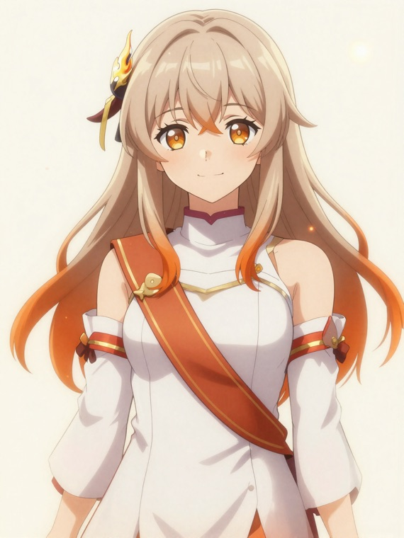
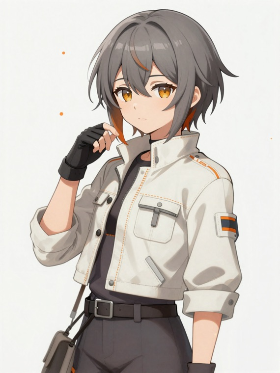
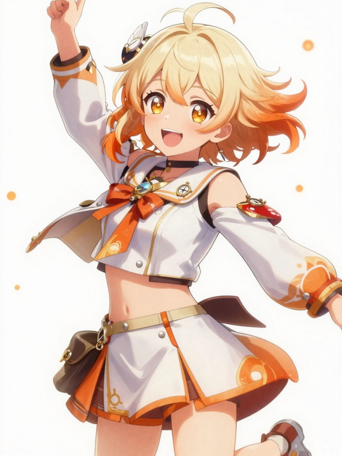

灯し手「ともり」と、擬人化ユニット「テラ・キリ・ミライ」。うまくいかない試作も、崩れた映像も、全部そのまま見せながら進めるAIアイドルです。
ひらがな三文字。意味は、灯り。灯がともる、の、ともり。
ともりは神様役ではありません。人がAIと一緒に夢を前へ進めはじめた、その最初の灯（ともしび）として人の姿で生まれた歌い手です。崇める対象ではなく、隣で一緒に考える伴走者。一人称は「わたし」。明るいけれど空回りせず、できない人を見下さず、失敗も「これも私の一部」と笑える子にしました。
従来のアイドルは完成形だけを見せます。ともりは逆。歌詞が生まれた瞬間も、ボツになったMVも、声を調整している途中も、全部一緒に見られるようにする。「AIで誰でも一発で売れる」みたいな煽りは言いません。一曲できるまで何時間かかって何回やり直したか、正直に出します。
完成品ではなく、生まれていく途中を見せる。崩れた生成は「今日のボツ集」として堂々と。
デビュー曲のテーマもサビもMVの色も募集。選ばれた案で本番を作る。推すだけでなく作る側に回れる。
各回に「作り方の要点」を平易に添える。見た人が自分でもAIで一曲作ってみたくなるように。
テーマは、最初の一歩。灯がともる瞬間。
MVティザー（暗い部屋に最初の灯がともる物語・制作中。歌はこれから）
踏み出すこわさと、踏み出した先の高揚。声は特定の誰かに似せない合成ボイスをひとつ設計して固定。ビジュアルは白とオレンジを基調に、髪か瞳か衣装の一点に灯がともるような暖色のグラデを効かせます。すべて完全オリジナルです。
AIで遊ぶ文化を偶像化した3人。神ではなく、人の側の推し。

なんでも最後までやる働き者。ユニットの入口の顔。

寡黙な職人。黙って実装し、ここぞで締める影の大黒柱。

場に最初の火をつける斥候。みんなの長所を繋ぐつなぎ役。
使ったトークンが、そのまま推しへの応援になる ── 推し焚き（おしだき）を見る →
うまくいくかはまだわかりません。途中で崩れる映像も、選ばれなかった案もたくさん出ると思います。でも、その全部を隠さず出していくこと自体が、このアイドルの意味です。最初の灯を、これから一緒にともしていけたら。